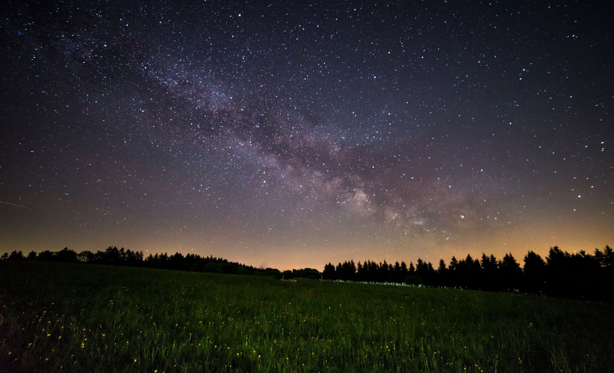

Boltzmann Beyni Paradoksu: Evren Seni Rastgele Üretmiş Olabilir mi?
Şu an bu cümleyi okuduğunuza dair elinizde ne kanıt var? Çocukluğunuzu hatırlıyorsunuz, odanızın duvarını görüyorsunuz, fizik dersinden kalma bilgileriniz var. Bunların hepsi, evrenin sonsuz zaman sonra rastgele ürettiği bir beynin içinde bir an için beliren sahte anılar da olabilir. Kozmologlar buna Boltzmann Beyni diyor. İş şakaya benzemiyor: ciddi bir fizikçi, ciddi bir makalede, bazı kozmoloji modellerinin bu yüzden kabul edilemez olduğunu savundu. Bu yazıda fikrin nereden çıktığını, neden hâlâ rahatsız ettiğini ve fizikçilerin çıkış yolu için ne önerdiğini okudum.

Boltzmann’ın sorunu: neden düzenli bir evrendeyiz?
Hikâye, Boltzmann’ın kendisinden önce başlıyor. Termodinamiğin ikinci yasası entropinin, yani dağınıklığın artma eğiliminde olduğunu söylüyor. Evren hep dağınıklığa doğru gidiyorsa neden şimdi bu kadar düzenli? Yıldızlar var, gezegenler var, canlılar var. Bu soru 19. yüzyıl sonunda cevapsızdı.
Wikipedia’nın aktardığına göre Ernst Zermelo 1896’da ikinci yasanın mutlak olduğunu, istatistiksel olamayacağını savundu. Poincaré tekrarlanma teoremini dayanak yapıyordu. Boltzmann iki yanıt verdi. Birincisi, bugün doğru kabul edilen yanıt: evren bilinmeyen bir nedenle çok düşük entropili bir başlangıçtan çıktı. İkincisi “Boltzmann evreni” senaryosu. Wikipedia bu ikincisini Boltzmann’ın asistanı Ignaz Schütz’e ve 1895’e bağlıyor. Fikir şuydu: evren çoğu zaman dengede, yani ölü bir sıcak çorba. Ama yeterince uzun beklenirse çorbanın içinde rastgele bir dalgalanma düzenli bir bölge yaratabilir. Biz de belki böyle bir bölgede yaşıyoruz.
Burada ilginç bir ayrıntı var. Aynı kaynak, Boltzmann Beyni fikrinin başta bu açıklamayı çürütmek için, yani reductio ad absurdum olarak ortaya atıldığını söylüyor. Bu belki de antropik ilkenin ilk modern kullanımıydı. Boltzmann Beyni bir öneri olarak değil, bir önerinin saçmalığını göstermek için kurulan karşı örnek olarak doğdu.
Eddington ve Feynman: küçük dalgalanma çok daha kolay
Wikipedia’ya göre Arthur Eddington 1931’de şu itirazı yaptı: büyük bir dalgalanma, küçük bir dalgalanmadan üstel olarak daha az olası. O zaman rastgele bir evrende gözlemciler çoğunlukla küçük dalgalanmalarda yaşar. Bir evrenin kendiliğinden belirmesi, tek bir galaksiden, tek bir gezegenden ya da tek bir beyinden çok daha zor.
Richard Feynman’ın Lectures on Physics kitabında da benzer bir akıl yürütme var. Burada dikkatli olmam gerekiyor, çünkü iki kaynak birbirini tam tutmuyor. Wikipedia Feynman’ın benzer bir karşı argüman yayımladığını söylüyor. Discover dergisindeki yazı ise Feynman’ın Boltzmann Beyni’nden hiç söz etmediğini, bağlantıyı Sean Carroll’ın kurduğunu belirtiyor. Discover’a göre Feynman, Boltzmann’ın mantığını izleyip evrenin bir dalgalanma olabileceğini düşünüyor ve sonra reddediyor. Gerekçesi şu: dalgalanma olsaydı düzeni yalnızca henüz baktığımız yerde bulmayı beklerdik, oysa her yeni baktığımız yerde yine düzen buluyoruz. Sonucu da şu: düzen, işlerin başladığı koşulların bir anısı.
Bu mantığa göre Boltzmann’ın ikinci yanıtı yanlış ve birincisi doğru: evren düşük entropiyle başladı.
Beyin tam olarak ne?
Carroll’ın 2017 makalesi Boltzmann Beyni’ni şöyle tanımlıyor: termal dengeden rastgele bir dalgalanmayla çıkan en az düzeyde gözlemci, kabaca gövdesiz bir beyin. Termal dengeye mümkün olduğu kadar yakın, ama hâlâ akıllı bir gözlemci sayılabilecek bir yapı. Karşısında “sıradan gözlemciler” var. Bunlar düşük entropili bir Büyük Patlama’dan sonra termodinamik olarak normal bir evrimle ortaya çıkanlar. Biz öyle olduğumuzu varsayıyoruz.
Dalgalanmanın olasılığı entropi bedeline göre üstel olarak azalıyor. Carroll bir beyin için entropi bedelini yaklaşık 1066 olarak hesaplıyor (Avogadro sayısı kadar nükleondan çıkarılan bir tahmin) ve dalgalanma hızını e−1066 mertebesinde veriyor. Bu sayıyı hayal etmek mümkün değil. Ama sonsuza yakın bir süre beklenirse en küçük olasılıklı olay bile er ya da geç gerçekleşir.
Beyin bir anda belirmiyor da. Wikipedia’nın aktardığı Aguirre, Carroll ve Johnson görüşüne göre beyin, kendi çürümesinin tersine çevrilmiş hâli gibi, bir dizi küçük dalgalanmayla oluşabilir. Carroll’ın makalesinde bu beynin anıları da rastgele: çevresiyle bir ilişkisi yok, hafızası geçmişe dair bilgi taşımıyor.
Neden şimdi tartışılıyor? Karanlık enerji
Fikir uzun süre felsefi bir oyuncak olarak kaldı. Sonra evrenin hızlanarak genişlediği anlaşıldı ve konu ciddileşti. Wikipedia’ya göre Dyson, Kleban ve Susskind 2002’de “Disturbing Implications of a Cosmological Constant” makalesiyle konuyu karanlık enerjiye bağladı. Albrecht ve Sorbo 2004’te, o tarihte fizikçilerin Eddington’ın argümanını sonuna kadar götürdüğünü, en küçük Boltzmann beyinlerinin en kalabalık gözlemci olacağını gösterdi.
Mantık şöyle işliyor. Evrende pozitif bir kozmolojik sabit varsa, evren sonunda de Sitter uzayına yaklaşıyor. Carroll’ın makalesine göre de Sitter sıcaklığı yaklaşık 10−33 eV ve entropisi yaklaşık 10122. Bu entropi, sonlu boyutlu bir Hilbert uzayı demek (boyutu e10122). Sonlu boyutlu uzayda zaman uzayınca her şey tekrarlanıyor, dalgalanmalar da dahil. Dyson ve arkadaşlarının sonucu: Eğer bu doğruysa ΛCDM modeli kabul edilemez.
Bu rakamlar Carroll’ın makalesinden. Sıradan gözlemci sayısını 1011 ile 10124 arasında alıyor, yıldız sayısını 1024. Evren B’de beklenen beyin sayısı bunların her birinin çok ötesinde. B doğruysa sıradan bir insan olmak istatistiksel olarak pek olası değil.
Carroll’ın asıl itirazı: sorun olasılık değil, güven
Standart argüman şöyle: Evren B doğru olsaydı büyük olasılıkla ben bir Boltzmann beyni olurdum. Ama değilim, o halde B yanlış. Carroll’a göre bu argüman “tam olarak doğru değil”. Gerçek sorun başka bir yerde: bu tür modeller “bilişsel olarak kararsız”.
Makalede bunu iki bilim insanının diyaloğuyla anlatıyor. S, mikrodalga arka plan ışımasına bakıp evrenin düşük entropili bir geçmişi olduğunu savunuyor. W, o ışımanın yerel bir dalgalanma olabileceğini söylüyor. S ışımanın sürdüğünü kontrol ediyor ve Boltzmann gözlemcisi olmadığını sonucuna varıyor. W’nin cevabı: kontrol ettiğine inanan ve ışımanın hâlâ orada olduğunu bulan gözlemciler de ezici çoğunlukla dalgalanmalar. Hiçbir deney meseleyi çözemiyor, çünkü her kanıt da bir dalgalanmayla ortaya çıkmış olabilir.
Carroll’ın önerdiği çözüm şu: bu tür modellere veriyi toplamadan önce sıfıra yakın bir önsel olasılık vermek. Çünkü model doğruysa, onu doğru sayma gerekçemiz de çöküyor. Bu argüman, “hayır, ben Boltzmann beyni değilim, bak gözlemim bunu gösteriyor” diyen savunmayı bile geçersiz kılıyor. Gözlemin kendisi dalgalanma olabilir.
Beyin mi, bütün bir gözlemci mi?
Carroll makalede önemli bir ayrım yapıyor. Boltzmann Beyni, termal dengeye en yakın gözlemci. Ama sorun beyinle sınırlı değil. Makale “Boltzmann gözlemcisi” (BO) kavramını da tanıtıyor: bir gözlemcinin makroskobik çevresiyle birebir aynı olan en küçük dalgalanma. Sıradan bir insanın tüm odasıyla, duvarıyla, penceresinden görünen manzarasıyla birlikte rastgele belirmiş bir kopyası.
Bu ayrımın önemi şurada: tartışmanın savunucuları bazen “beyinler tuhaf, bir beyin olduğumu düşünmüyorum” diye yanıt veriyor. Carroll’a göre gerçek sorun, sıradan gözlemcilerle yerel olarak aynı görünen dalgalanmalar. Olasılık dağılımlarını değiştirmek bu sorunu ortadan kaldırmıyor.
Wikipedia’nın aktardığı bir sonuç da aynı yöne işaret ediyor: Boltzmann beyinlerinin herhangi bir alt kümesi, örneğin 3 K’lik kozmik mikrodalga arka planı algıladığına inananlar, sıradan gözlemcilerden çok daha kalabalık olabilir. “Ben mikrodalga arka planını gördüm” demek bile kimin konuştuğunu belirlemiyor.
Çoklu evrende sayma: “Boltzmann bebekleri”
Konu çoklu evren kuramlarına gelince karışıklık artıyor. Sonsuz bir çoklu evrende normal gözlemcilerin Boltzmann beyinlerine oranı, sonsuzların nasıl karşılaştırıldığına bağlı. Wikipedia’ya göre bazı ölçüler büyük Boltzmann oranlarından kaçınıyor, ama başka ölçülerde Boltzmann beyni evrenlerinin küçük bir payı bile çoklu evren ölçüsüne hâkim olabiliyor. Bu karşılaştırma yöntemine “ölçü problemi” deniyor.
Bir de “uygun zaman” ölçüsünde ortaya çıkan “gençlik problemi” var. Bousso, Freivogel ve Yang’ın 2008’de gösterdiğine göre bu ölçüye göre tipik gözlemci, sıcak ve genç bir evrende oluşan bir “Boltzmann bebeği”. Wikipedia bunu özet olarak aktarıyor. Mesele şu: Boltzmann Beyni sorunu tek bir kuramın zayıflığı değil, kozmolojide “kaç gözlemci var?” sorusuna nasıl yaklaşacağımızı belirleyen bir ölçüt sorunu. Carroll bu konuyu makalesinin kapsamı dışında tutuyor ve bu yüzden benim de burada daha derine inmem mümkün değil.
Sonlu Hilbert uzayı ne demek?
Bu bölüm benim sadeleştirmem, kaynaklardaki anlatımın kaba bir çevirisi. Kuantum mekaniğinde bir sistemin alabileceği bütün durumlar “Hilbert uzayı” denen bir uzayda yaşıyor. Eğer evrenin entropisi sonluysa, bu uzayın boyutu da sonlu. Sonlu sayıda durum arasında dolaşan bir sistem, yeterince beklendiğinde bildiği durumlara tekrar tekrar dönüyor. Dyson, Kleban ve Susskind’in kaygısı bu: de Sitter evreni sonlu entropiye sahipse, bir noktadan sonra bizimkine benzer durumlar da dahil olmak üzere her şey defalarca tekrarlanıyor.
Carroll’ın makalesinde belirtildiği gibi bu tekrarlanma süresi e10122 saniye mertebesinde. Evrenin bugünkü yaşı yaklaşık 1018 saniye. İkisi arasındaki fark, insan zihninin kavrayabileceği şeyler arasında değil. Bu da tartışmayı ilginç kılıyor: pratikte hiçbir zaman gözlenmeyecek bir ölçekten, bugünkü kuramlarımızı eleme sonucu çıkarıyoruz.
Çıkış yolları
Carroll bu modellerin sorun çözülene kadar düzeltilmesi ya da daha iyi kuramlarla değiştirilmesi gerektiğini söylüyor. Makalede ve Wikipedia’nın özetinde birkaç çıkış yolu sayılıyor.
- Vakum çöküşüEvren yaklaşık 20 milyar yıl içinde yerel olarak çökerse sonsuz sayıda beyin oluşamaz. Wikipedia’ya göre Don Page 2008’de bunun ne kadar olası olduğunu inceledi. Ortalama çöküş süresi 20 milyar yıldan uzunsa sonsuz oluşum devam ediyor. Önerilen tetikleyiciler arasında ağır gravitinolar ve daha ağır bir top kuark (“Higgs yüzünden ölüm”) var.
- QuintessenceGözlenen vakum enerjisi, zamanla dağılan bir quintessence alanından geliyorsa sonsuz oluşum engelleniyor.
- Sonsuz boyutlu Hilbert uzayıCarroll’a göre, Λ = 0 olan en az bir vakum varsa (örneğin sicim manzarasında), Hilbert uzayı sonsuz boyutlu olabilir ve dinamik dağıtıcı olabilir. Bu, tekrarlanma argümanını zayıflatıyor.
- Durağan vakumBoddy, Carroll ve Pollack’ın görüşüne göre de Sitter vakumu durağan, yani gerçek Boltzmann dalgalanması içermiyor. Carroll bunun kuantum durumlarının nasıl yorumlandığına bağlı olduğunu ve çözülmediğini yazıyor.
- Ölçü problemiÇoklu evrenlerde gözlemcilerin göreli sayısı, sonsuzların nasıl kıyaslandığına bağlı. Carroll bunu makalenin kapsamı dışında tutuyor.
Carroll’ın makalesinde küçük bir ayrıntı dikkat çekiyor. Vakum çöküşünün işe yaraması için kabarcık oluşum hızının Hubble hacmi başına Hubble zamanında yaklaşık bir veya daha fazla olması gerekiyor. Bu hızda bile Dünya’nın bir yüzyıl içinde bir kabarcıkla kesişme olasılığı yaklaşık 10−8. Modeli kurtaran şey, bizi pek etkilemeyen bir olay olurdu.
Norton: Boltzmann hiç bunu söylemedi
Bütün bu tartışma tek bir adımın doğru olduğunu varsayıyor: yeterince bekleyince dalgalanmalar bizimki gibi bir düşük entropili durum üretir. John Norton (Pittsburgh) bu adımı sorguluyor. Makalesine göre Boltzmann bunu hiç kanıtlamadı, onun gösterdiği, termal dengenin düşük entropili durumlara dalgalanabileceğiydi, tam olarak bizimki gibilere değil.
Norton’un iki itirazı var. Birincisi tekrarlanma teoremi: Poincaré teoremi sonlu faz uzayı ve sonlu serbestlik derecesi gerektiriyor ve klasik sistemlere uygulanıyor. Kozmoloji ve kuantum mekaniği bu koşulları ihlal edebilir. İkincisi zamanda tersinirlik: mikrofiziğin zaman tersinir olduğu açık değil, zayıf etkileşimler ve kuantum ölçümü tersinmez. Üstelik tersine işleyen bir sürecin bir “dönüş noktası” ve dalgalanmanın bir “başlangıcı” olması da garanti değil.
Norton ayrıca iki ilginç noktaya değiniyor. Birincisi, “kendini çürüten” argüman: dalgalanma olsaydık, termal fiziği de içeren bütün kanıtlarımız uydurma olurdu. Bu, Carroll’ın bilişsel kararsızlığıyla aynı yönde. İkincisi “çılgın beyinler”: dalgalanma düzenli bir geçmişe ait tutarlı anılar yerine, düzensiz bir geçmişin kaotik anılarını taşıyan beyinler üretmeye daha yatkın. Kendi anılarının düzenli olduğuna inanan beyinler, anıları gerçekten düzenli olanlardan çok daha fazla. Dolayısıyla tipik bir dalgalanma beyni bizim gibi olmazdı.
Fizikçiler ne diyor?
Wikipedia’nın özetine göre kozmologların çoğu, hesabın Boltzmann beyinlerinin sıradan gözlemcileri aşacağını öngörmesinin, henüz tespit edilmemiş bir hatadan kaynaklandığına inanıyor. Seth Lloyd, bu beyinlerin “Monty Python testini geçemediğini” söylüyor, yani fazla saçma. Brian Greene Boltzmann beyni olmadığından emin olduğunu, ama kuramların bunu göstermekte zorlandığını belirtiyor. Alan Guth, pozitif kozmolojik sabit evreninde sıradan beyin sayısının sonlu, Boltzmann beyni sayısının çoğu modelde sonsuz olduğuna dikkat çekiyor ve bu yüzden normal bir beyin olmanın “sonsuz derecede olasılık dışı” görünmesinden endişe ediyor.
Felsefede de aynı soru dolaşıyor. Wikipedia, Schwitzgebel’in (2017) ve Dogramaci’nin (2019) kanıtın bu soruyu nasıl yanıtladığını inceleyen çalışmalarına değiniyor. Hepsini okumadım.
Bunun gündelik hayatla ilgisi var mı?
Bu bölüm benim yorumum. Boltzmann Beyni’nin gündelik bir sonucu yok, çünkü yarın sabah ne yapacağınızı değiştirmiyor. Asıl ilginç yanı, fiziğin kendi sınırını göstermesi. Bir kuram, kendisine inanmak için gerekçelerimizi yok ediyorsa, doğru olsa bile bunu bilemeyiz. Bu, sıradan bir yanlışlama değil: kuramın içinde kendi ispatını imkânsız kılan bir yapı var.
Bunu bir şüphecilik ders kitabı örneği olarak da okuyabiliriz. Hiçbir deney bir kanıtın kendisinin güvenilir olduğunu gösteremez. Yine de bilim insanları belli bir güvenle çalışmak zorunda. Carroll’ın önerdiği çözüm bu güvene bilinçli bir önsel verilmesi: iyi bir kuram, bizi kendi gözlemlerimizden şüpheye düşürmemeli.
Bu yazının sınırları
Carroll’ın makalesini bir özetleme aracı üzerinden okudum, sayısal değerlerini ve formüllerini kendim yeniden hesaplamadım ve alıntıladığım ifadeleri metinden tek tek doğrulamadım. Wikipedia maddesi ikincil bir kaynak ve tarihsel atıflarını (Zermelo, Schütz, Eddington, Dyson ve ark., Albrecht ve Sorbo, Page) orijinal makalelerden doğrulamadım. Norton’un makalesi özet halinde okundu. Linde’nin 2007 tarihli “Sinks in the landscape” makalesi Wikipedia’da anılıyor ama içeriğine bakmadım. Zaman ölçeklerine ilişkin sayısal değerler Wikipedia’da eksikti, yalnızca Carroll’ın makalesinden aldığım rakamları kullandım. Descartes’in kötü cin argümanıyla bağlantıyı bu yazıya dahil etmedim, çünkü kaynaklarımda ayrıntısı yok. “Gündelik hayatla ilgisi” bölümü benim yorumum.
Kaynaklar çelişiyor
- Feynman’ın rolüWikipedia, Feynman’ın Lectures on Physics kitabında benzer bir karşı argüman yayımladığını yazıyor. Discover’daki yazı Feynman’ın Boltzmann Beyni’nden söz etmediğini, bağlantıyı Carroll’ın kurduğunu söylüyor.
- Boltzmann evreninin sahibiWikipedia, Boltzmann’ın ikinci yanıtını (dalgalanma senaryosu) asistanı Schütz’e ve 1895’e bağlıyor. Bu yazıda “Boltzmann’ın 1896 yanıtı” olarak da anılıyor. İkisi birbirinden ayrılmamış durumda.
- Neden elenmeli?Standart argüman, “ben Boltzmann beyni değilim” gözlemine dayanıyor. Carroll bunu “tam doğru değil” buluyor ve bilişsel kararsızlığı öne çıkarıyor.
- de Sitter’de dalgalanmaDyson, Kleban ve Susskind’e göre de Sitter evreni Boltzmann dalgalanmalarına yol açıyor. Boddy, Carroll ve Pollack’a göre durağan vakumda gerçek dalgalanma yok. Carroll bunun yoruma bağlı olduğunu söylüyor.
- Dalgalanma bizim gibi mi?Dalgalanma argümanı bizimki gibi bir durumun üretileceğini varsayıyor. Norton bu adımın kanıtlanmadığını söylüyor.
Başlıca kaynaklar: Sean Carroll, “Why Boltzmann Brains Are Bad” (arXiv:1702.00850, 2017); Wikipedia, Boltzmann brain; Discover, “Richard Feynman on Boltzmann Brains”; John D. Norton, Boltzmann brain makalesi (Pittsburgh Üniversitesi). Fotoğraf: Pixabay / Pexels (Pexels lisansı).
Veri notu: Carroll’ın makalesini ve Norton’un makalesini özetleme aracıyla okudum, sayısal değerleri kendim hesaplamadım. Tarihsel atıflar (Zermelo, Schütz, Eddington, Dyson-Kleban-Susskind, Albrecht-Sorbo, Page) Wikipedia’dan, orijinal makalelere bakmadım. Feynman konusunda iki kaynak birbirinden ayrılıyor, yazıda belirttim. Zaman çizelgesindeki aralıklar orantılı değildir. “Bunun gündelik hayatla ilgisi var mı?” bölümü benim yorumumdur. Bu yazı bilgi amaçlıdır.